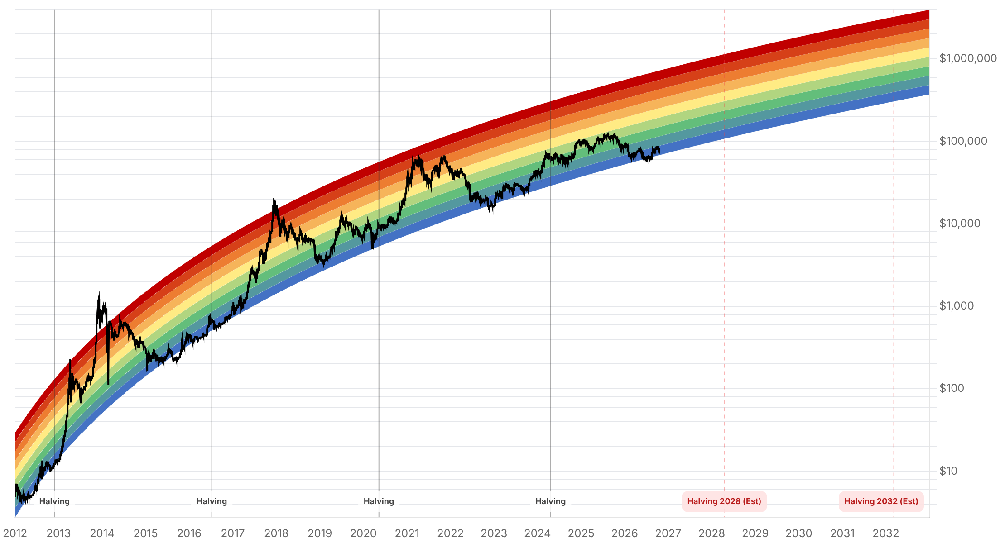

Reporte financiero
BTC cotiza en USD 81.637,60 en vivo (07:14 UTC), +0,31% frente al cierre anterior (USD 81.383,29) y prácticamente estable frente al precio en vivo de ayer (USD 81.504,94) -el precio sigue lateralizando en la zona de USD 81.400-81.900 por tercer día consecutivo-. El Fear & Greed Index continúa el enfriamiento que se viene reportando desde hace tres días: retrocede de 55 a 53, cruzando de 'Greed' a 'Neutral' por primera vez desde antes de la caída del 15 de octubre. La novedad más concreta del día es doble: (1) se confirma que los ETF spot de BTC en EE.UU. cerraron el 16 de octubre con USD 82,4M en salidas netas (87% concentrado en IBIT de BlackRock, según SoSoValue/Farside) -el dato que el reporte de ayer no pudo confirmar-, acumulando así USD ~614,7M en salidas netas en las primeras 12 ruedas de octubre, lo que deja a BTC cayendo cerca de 4% en el mes (de USD 84.856 el 1-oct a USD 81.497 el 17-oct, según 24/7 Wall St.); y (2) Tailandia activó el 16 de octubre sus primeros ETF locales de Bitcoin y Ether en la Bolsa de Valores de Tailandia (Stock Exchange of Thailand) -el hito regulatorio que reportes anteriores venían mencionando como 'sin avance' pasó de proyecto a realidad, aunque con alcance acotado: solo fondos de gestión local, réplica pasiva, y sin acceso de corredoras locales a ETF listados en el extranjero-. Además, se despejó una ambigüedad macro que reportes anteriores no habían podido resolver: la Fed subió tasas el 16 de septiembre a 3,75%-4,00% (primera suba desde 2023, voto unánime 12-0) y su diagrama de puntos sigue siendo claramente hawkish -16 de 18 miembros esperan al menos una suba adicional antes de fin de año, bajo la presidencia de Kevin Warsh-, lo que da contexto a por qué los mercados de predicción (Manifold ~15-22%, Polymarket ~22%) asignan probabilidades bajas a un recorte en la reunión del 27-28 de octubre: no es una contradicción entre fuentes, es consistente con una Fed en modo de ajuste, no de alivio. El resto de los ejes no tiene novedad: Strategy/Saylor sigue en 848.250 BTC sin compra nueva confirmada desde el filing del 12 de octubre; Tether/Cantor Fitzgerald sigue sin respuesta pública, con el plazo de Blumenthal venciendo en 5 días (23 de octubre); y la Clarity Act sigue estancada desde que la moción de cloture fracasó 50-49 en el Senado el 15 de septiembre, sin fecha de un nuevo intento.
BTC cotiza en vivo en USD 81.637,60 (07:14 UTC), +0,31% frente al cierre anterior y casi sin cambios frente al precio en vivo de ayer (USD 81.504,94) -tercer día consecutivo lateralizando en la misma banda estrecha tras el rebote del 16 de octubre-. El Fear & Greed Index continúa la racha de enfriamiento de los últimos tres reportes (63 -> 55 -> 53) y cruza por primera vez de 'Greed' a 'Neutral', reflejando un mercado que ya no muestra la euforia de la semana pasada pero tampoco ha entrado en temor.
El reporte de ayer no pudo confirmar el flujo de ETF spot de BTC del 16 de octubre; hoy SoSoValue y Farside Investors coinciden en USD 82,4M de salida neta ese día, con el 87% concentrado en IBIT de BlackRock (-USD 71,8M) y el resto en FBTC de Fidelity (-USD 10,6M) -los demás fondos sin flujo neto-. Con ese dato, octubre acumula aproximadamente USD 614,7M en salidas netas en sus primeras 12 ruedas (vs. una entrada neta de solo USD 5,1M el 15 de octubre), y el precio de BTC cae cerca de 4% en lo que va del mes (de USD 84.856 el 1-oct a USD 81.497 el 17-oct, según 24/7 Wall St.) -el mes que se esperaba estacionalmente alcista ('Uptober') viene siendo, por ahora, uno de salida de capital institucional.
La Comisión de Valores de Tailandia (SEC tailandesa) habilitó desde el 16 de octubre la cotización de ETF de Bitcoin y Ether gestionados localmente en la Bolsa de Valores de Tailandia (Stock Exchange of Thailand) -el hito que reportes anteriores venían describiendo como 'sin avance' se concretó. El alcance es acotado: solo fondos constituidos localmente (no ETF extranjeros listados vía corredoras tailandesas), con réplica pasiva únicamente del precio spot, sin estrategias activas. Es el segundo mercado del sudeste asiático en abrir esta vía tras los productos restringidos a inversores calificados que Tailandia ya tenía desde 2024.
Reportes anteriores citaban probabilidades de 'recorte' de tasas sin poder reconciliar fuentes contradictorias (Manifold ~15-22%, Polymarket ~22%). La pieza que faltaba: la Fed subió tasas el 16 de septiembre a 3,75%-4,00% (voto unánime 12-0, primera suba desde 2023), y el diagrama de puntos actualizado muestra a 16 de los 18 miembros esperando al menos una suba adicional de 25 puntos básicos antes de fin de año -bajo la presidencia de Kevin Warsh, quien citó inflación todavía por encima del objetivo y tensión en Medio Oriente como justificación-. Con ese trasfondo, las probabilidades bajas de un recorte para la reunión del 27-28 de octubre no son una anomalía entre fuentes: son consistentes con una Fed en modo de ajuste. No se encontró aún una cifra específica de CME FedWatch para esa reunión puntual.
AMBCrypto reportó el 17 de octubre dos transacciones de ballenas por un total de 3.766 BTC (~USD 307M): una transferencia de 2.878 BTC entre wallets no identificadas y un retiro de 888 BTC desde Kraken. CoinGlass registró un flujo neto hacia exchanges levemente positivo (+USD 18,65M), es decir, entradas apenas por encima de las salidas -una señal mixta, sin indicar acumulación ni distribución clara.
Strategy permanece en 848.250 BTC, sin compra nueva confirmada desde el filing del 12 de octubre (semana del 5-11 de octubre, 250 BTC). El plazo del senador Blumenthal para que Cantor Fitzgerald responda sobre su participación en Tether vence en 5 días (23 de octubre), sin pronunciamiento público de ninguna de las dos partes. La Clarity Act sigue estancada desde que la moción de cloture fracasó 50-49 en el Senado el 15 de septiembre -por disputas sobre las provisiones de ética ligadas a negocios cripto de la familia Trump-, sin fecha anunciada para un nuevo intento.
| Periodo | Valor |
|---|---|
| 12 oct | 81762.56 |
| 13 oct | 83095.13 |
| 14 oct | 81562.49 |
| 15 oct | 82141.46 |
| 16 oct | 81500.8 |
| 17 oct | 81382.15 |
| 18 oct (en vivo) | 81637.6 |
| Periodo | Valor |
|---|---|
| Fear & Greed | 53 |

“Los datos on-chain sugieren un posible piso apenas por encima de los USD 80.000, con menor presión de venta de corto plazo tras la purga de posiciones apalancadas del 15 de octubre.”
“La economía, incluido el mercado laboral, se mantiene fuerte, pero la inflación sigue por encima del objetivo del banco central -justificando la suba de tasas de septiembre y abriendo la puerta a otra suba antes de fin de año.”
El precio lleva tres días lateralizando en la banda USD 81.400-81.900, sin un catalizador nuevo que lo sacado de ese rango. El Fear & Greed cruzando a 'Neutral' (53) y el flujo de ETF todavía negativo (USD 82,4M de salida el 16-oct) apuntan a un mercado sin convicción direccional de corto plazo, ni comprador ni vendedor dominando con claridad. Los niveles técnicos de Decrypt (resistencia USD 81.603, soporte USD 80.407/80.365, y la zona USD 75.759-75.093 más abajo) siguen sin novedad desde el reporte anterior.
El rango de QCP Capital para el Q4 (USD 80.000-90.000) sigue vigente, con el precio hacia el extremo bajo de esa banda. El contexto macro ahora es más claro: la Fed subió tasas en septiembre y su sesgo sigue siendo hawkish (16/18 miembros esperan otra suba antes de fin de año), lo que reduce la probabilidad de un catalizador de alivio monetario en el corto plazo y ayuda a explicar por qué los mercados de predicción asignan baja probabilidad a un recorte en la reunión del 27-28 de octubre. Las salidas acumuladas de ETF en octubre (~USD 614,7M) son la señal de demanda institucional más débil del mes hasta ahora.
Sin cambios en los objetivos de precio de largo plazo ya reportados en ediciones anteriores (Citigroup, Bernstein, Standard Chartered, Tom Lee, NYDIG, Armstrong). En el frente regulatorio, Tailandia ya pasó de proyecto a ETF cripto operativos (16 de octubre) -un precedente regional que se suma al trasfondo de adopción institucional de largo plazo-, mientras que la Clarity Act en EE.UU. sigue sin fecha de reintento tras el fracaso de cloture del 15 de septiembre. El plazo del 23 de octubre para la respuesta de Cantor Fitzgerald a Blumenthal sigue siendo el próximo hito concreto a vigilar en el eje Tether.
El precio lleva tres días sin salir de esta banda estrecha, con el Fear & Greed cruzando a 'Neutral' y sin un catalizador claro en ningún sentido. Esperar un cierre diario por fuera del rango (y de los niveles técnicos de Decrypt: USD 84.246 arriba, USD 78.003 abajo) antes de asumir una ruptura real.
Con la Fed habiendo subido tasas en septiembre y 16 de 18 miembros proyectando otra suba antes de fin de año, las probabilidades bajas de un recorte en la reunión del 27-28 de octubre (Manifold, Polymarket) son consistentes con ese sesgo, no una anomalía. Posicionarse para un recorte sorpresa como escenario base no está respaldado por la evidencia actual.
Las salidas acumuladas de octubre (~USD 614,7M) anteceden y acompañan la caída mensual de casi 4% -es una señal más temprana que el precio spot. Un cambio a entradas netas sostenidas sería la confirmación más confiable de que la demanda institucional está volviendo antes de asumir un piso definitivo.